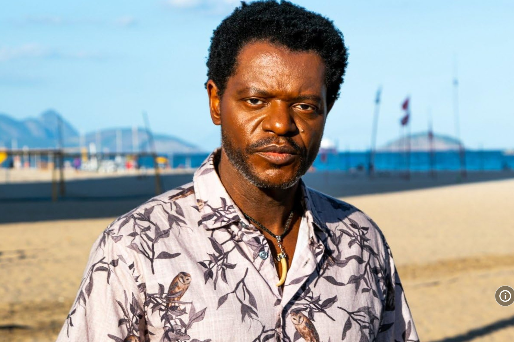
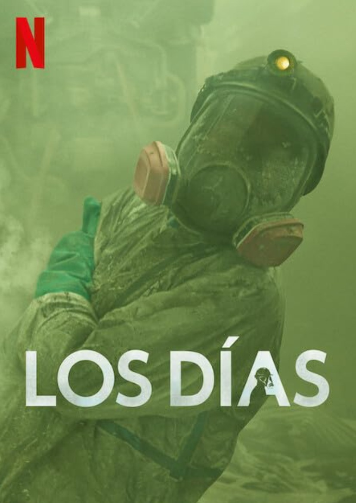
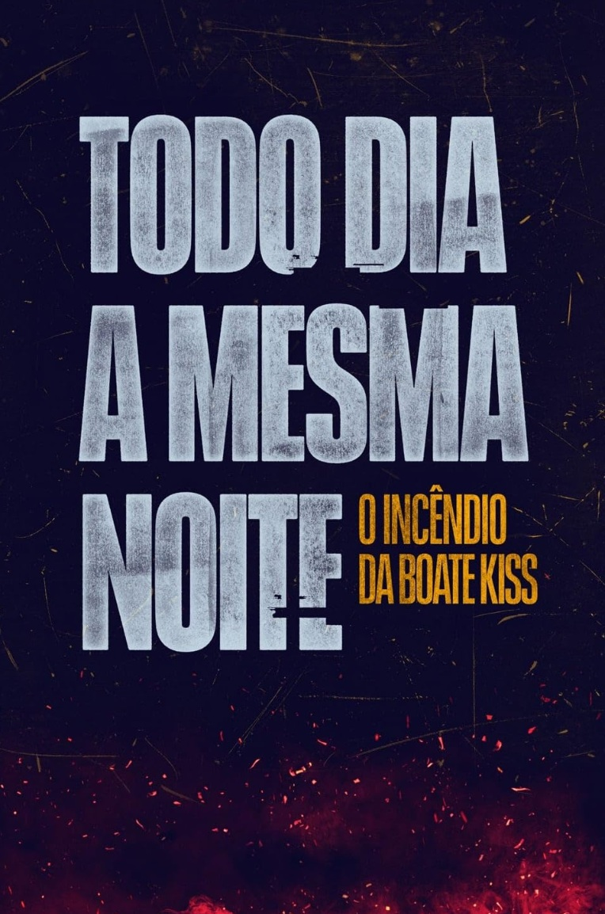
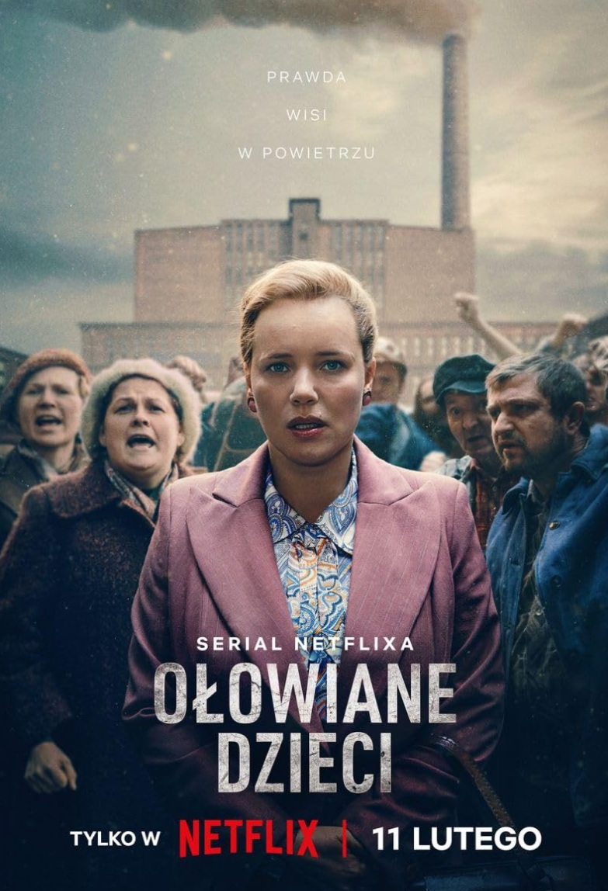
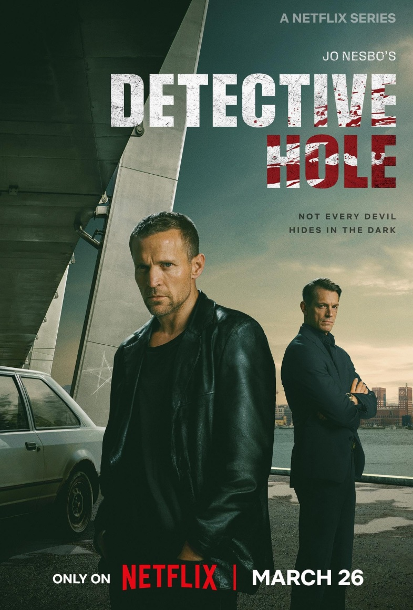

EMERGENCIA RADIOACTIVA
En Brasil en 1987, chatareros encuentran una sustancia luminosa en un hospital abandonado. Mientras cambia de
manos, científicos y médicos intentan evitar que una catástrofe radiactiva cobre muchas vidas.
- Género: Aventura
- Año: 2026
- Duración: 1 TEMPORADA
- Director: Fernando Coimbra, Iberê Carvalho
- Productores/as: Fernando Coimbra, Toti Gennari
- Calificación general: 5.1/10
- Clasificación por edad: +18
- Plataformas: Netflix
Tráiler
REPARTO
PAULO GORGULHO

BUKASSA KABENGELE
TUCA ANDRADA
CLARISSA KISTE
ANTONIO SABOIA
RESEÑAS DESTACADAS
Calificación: 8.0 / 10
UltraNeptuneCat dice:
Entretenimiento informativo y constante
“Esto es muy informativo e interesante sobre cómo se investigan y resuelven los incidentes radiactivos.
Y cómo empeora sin previo aviso. Es un buen drama médico, realmente recrea un desastre de pueblo
pequeño y habla de los efectos secundarios tanto para el pueblo como para la gente, y puedes entender
ambos lados: la gente, la policía y las personas que están siendo tratadas.”
Calificación: 8.0 / 10
Lads99 dice:
El horror de lo invisible y la curiosidad humana
"La miniserie desempeña un papel vital en la memoria colectiva de Brasil,
transformando uno de los peores accidentes radiológicos del mundo en una
narrativa de horror real y negligencia estatal.
Es una obra indispensable para entender que el peligro nuclear no proviene solo
de bombas o centrales eléctricas, sino también de la gestión irresponsable de
los residuos tecnológicos. Recomendado."
Calificación: 9.0 / 10
AFS-91478 dice:
Me encantó esto
"Fue una gran serie que trató un tema del mundo real. Muy original. Por favor,
encarga más cosas como esta. El reparto es realmente bueno. Fue una gran
serie que trató un tema del mundo real. Muy original. Por favor, encarga más
cosas como esta. El reparto es realmente bueno. Volvería a verlo. Lo recomiendo
a todo el mundo."
Calificación: 5.0 / 10
Dennesey dice:
Evento importante mal escrito
"No podía seguir el ritmo de la cantidad de diálogos absurdos. Cada vez que se
planteaba una preocupación válida, las reacciones o respuestas desafiaban la
realidad. A los 20 minutos, estaba claro que la escritura iba a condenar todo el
espectáculo para mí. No hace falta decir que el tema mantuvo mi interés lo
suficiente como para seguir adelante. Algunos actores ayudaron a que el sitio
fuera creíble y actuaron admirablemente. Tema importante que merecía tiempo
en pantalla, pero el guion me impidió llevar las estrellas más alto."
Calificación: 9.0 / 10
GloryBZZZ-92812 dice:
INFORMATIVO Y QUE INVITA A LA REFLEXIÓN
"Una muy buena representación ficticia de una posibilidad que conlleva el uso de
herramientas médicas diagnósticas. Aunque es ficción, hace que se conciencian
sobre una situación demasiado plausible, especialmente ahora que nos
enfrentamos a una guerra en la que todos los jugadores podrían tener armas
nucleares "escondidas en su armario" — envenenamiento por radiación a la
mano. Imagina un evento como este hoy; Cómo sobreviviríamos desnudos,
desnudos, con ignorancia y obstáculos para tu supervivencia personal en cada
paso. Puede que no sea la "mejor película" del año, pero sin duda es una de las
más provocadoras que he visto en muchos años."
RELACIONADOS

LOS DÍAS
Calificación: 7.2/10
DURACION: 1 TEMPORADA

TODOS LOS DÍAS LA MISMA NOCHE
Calificación: 7.6/10
DURACION: 1 TEMPORADA

NIÑOS DE PLOMO
Calificación: 7.5/10
DURACION: 1 TEMPORADA
